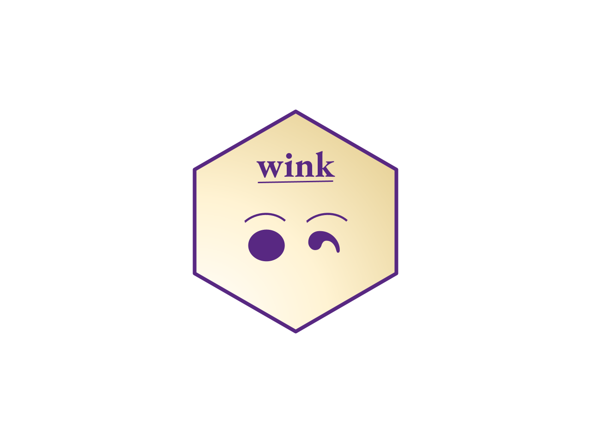

The goal of wink is to provide foundational functionality for generating tables of survey estimates, including significance testing.
Installation
You can install the development version of wink from the GitHub rep with:
devtools::install_github("jjmoncus/wink",
build_vignettes = TRUE, # helpful to see vignettes, set to FALSE if needed
force = TRUE # helpful if you've installed previous versions, forces an override, set to FALSE if needed
)Example
See vignette("wink") for an intro to the package, or visit the Get Started link on the website.
For questions, reach out to J.J. Moncus at jjmoncus706@gmail.com, or raise an issue.